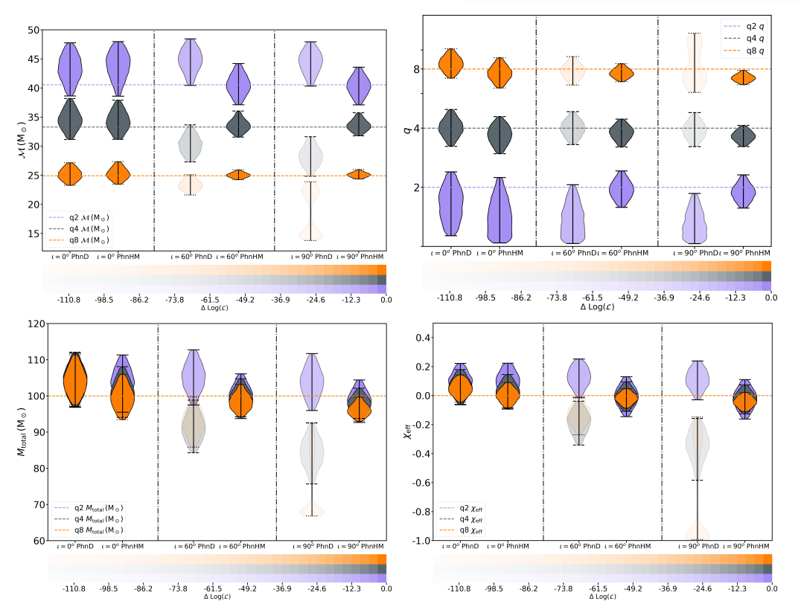
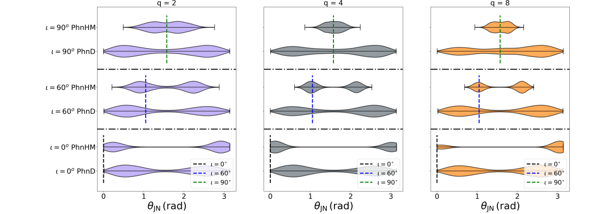

Parameter estimation of binary black hole mergers using phenomenological waveform approximants.
Paper Title: Parameter Estimation with a spinning multi-mode waveform model: IMRPhenomHM
Author: Chinmay Kalaghatgi, Mark Hannam, Vivien Raymond
Gravitational wave signal can be decomposed into the spherical harmonic multipoles which consist of dominant and sub-dominant modes. The dominant, also known as the quadrupolar mode and is represented as (l,|m|)=(2,2). However, it has been found that the contribution of the sub-dominant modes i.e. [(2,1), (3,3), (4,4)] modes gives an accurate recovery of different intrinsic and extrinsic parameters of binary mergers. The waveform models describing the inspiral, merger, and ringdown (IMR) stages of compact binary mergers are now available for the non-spinning, aligned-spin, and precessing configuration. The paper compares the recovery of different parameters using IMRPhenomD, which is a quadrupolar mode waveform with IMRPhenomHM, which is a computationally expensive higher mode phenomenological waveform approximant.
It was just after the detection of GW170729 (which had higher mass and non-zero spins), which was a result of mergers of two unequal binaries, proposed the use of the higher mode (or sub-dominant modes) waveform model to recover the parameters accurately. This is the reason we use the IMRPhenomHM waveform which has an aligned-spin configuration along with higher modes. Contrary, the sub-dominant modes containing waveforms are the weakest for the equal-mass binaries.
The gravitational wave signal is a 15-dimensional function and consists of 8 intrinsic parameters (mass and spins of binaries) and the rest of the extrinsic parameters (luminosity distance, inclination angle, sky-location, geocent time, RA, DEC). For a given system as the binary inclination to the detector changes from face-on (theta= 0 degrees) to edge-on (theta= 90 degrees), the contribution of the dominant mode decreases, so the overall power of the signal and the importance of the sub-dominant mode increases. Parameters recovered by IMRPhenomHM are not only better constrained w.r.t IMRPhenomD, but they also break the inclination and luminosity distance degeneracy, which will be discussed further.
Violin plots for the posteriors of intrinsic parameters (chirp mass, mass ratio, total mass and chi-eff or spin) using the IMRPhenomHM model injected at mass ratio, q= 2 (blue),4 (gray),8 (orange) at an inclination, theta_{JN}= 0 (face-on), 60 degrees, and 90 degrees (edge-on). The opacity detertmines the maximumm probility for the case. Note: The bimodal behaviour of IMRPhenomD at q=8 and theta_{JN}=90 degreesIn the recovery of the intrinsic parameters i.e. the black hole masses (total mass of ,binaries, and mass ratio: defined as the ratio of primary/heavier BH to secondary/lighter mass BH) and spin (chi-eff), they find that for the IMRPhenomHM injection at the edge-on, the posteriors for M_{total} and q=4,8 are slightly biased for the lower value. But the injection inclination of 60 degrees looks suitable for M_{total}, q=4,8, and chi-eff, because at this angle the recovered inclination peaks to the true value. This waveform recovers non-biased chi-eff even at a higher inclination.
Recovered posteriors of extrinsic parameter (theta_{JN}) using the IMRPhenomHM and IMRPhenomD as the recovery waveform model. Inclination recovery at mass ratio, q= 2 (left),4 (center),8 (right) at an inclination, theta_{JN}= 0 (face-on), 60 degrees, and 90 degrees (edge-on).In the recovery of the extrinsic parameters i.e. the inclination angle and the luminosity distance, it is found that by using the dominant mode at a higher inclination, the distance gets overestimated because the recovered inclination angle (theta_{JN}) has more support from the non-edge-on inclination. Also, it shows a bimodal behavior. Even IMRPhenomHM shows bi-modality due to the priors, but the posteriors are better constrained. Bi-modality is due to the effects of the prior over the parameters and the inaccuracy of the waveform model to create a true multi-mode signal. Thus a multi-mode template can contain the degeneracy between the inclination angle, polarization, and phase, thus leading to an improved value of inclination and better precession of luminosity distance. For the IMRPhenomHM injection inclination of 60 degrees and 90 degrees (edge-on), they see the recovered inclination peaks at the true value. In comparison with hybrid Numerical Relativity (NR) injections, it can be inferred that a larger systematics error will be observed in the edge-on system where the higher modes contribute the most to the signals. To check the faithfulness of the IMRPhenomHM model of recovering different posteriors, we look for its mismatches with the hybrid NR waveform model.